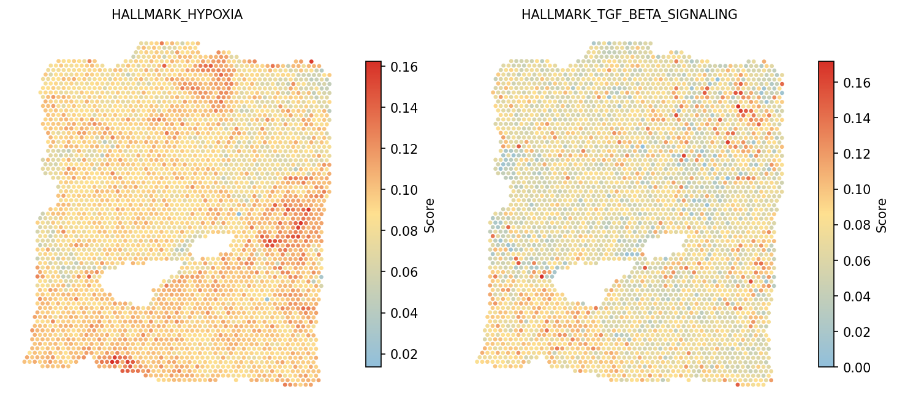
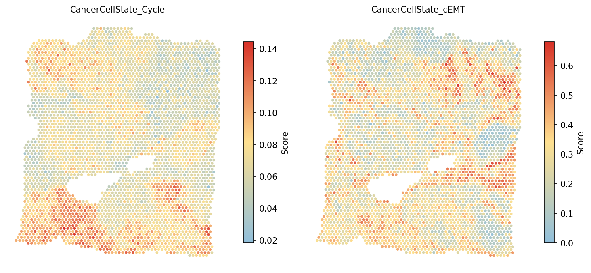
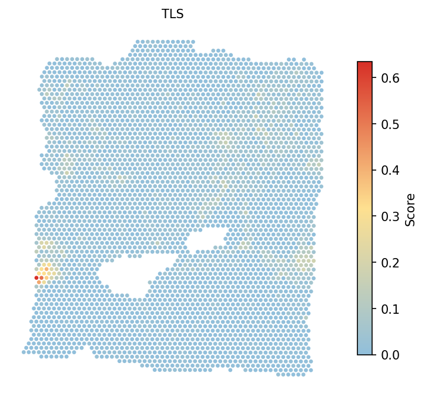

Gene Set Score Calculation and Visualization
Python GPU-accelerated Adapted from the SpaCET R tutorial
Overview
This tutorial demonstrates how to calculate and visualize gene set scores using spatial-gpu. Gene set scoring quantifies the activity of biological pathways or cell states at each spot in spatial transcriptomics data, enabling spatial mapping of functional programs across the tissue.
The gene_set_score() function implements the
UCell algorithm,
which uses a rank-based scoring method that is robust to differences in
library size and gene detection rates across spots.
Three built-in gene set collections are available:
- Hallmark — MSigDB Hallmark gene sets (50 pathways covering major biological processes)
- CancerCellState — Cancer cell state gene sets (EMT, proliferation, hypoxia, etc.)
- TLS — Tertiary lymphoid structure signature
Custom gene sets can also be provided as a Python dictionary or loaded from
a GMT file using spacet.read_gmt().
API Mapping: R SpaCET → spatial-gpu
| R SpaCET | spatial-gpu (Python) |
|---|---|
| library(SpaCET) | import spatialgpu.deconvolution as spacet |
| SpaCET.GeneSetScore() | spacet.gene_set_score() |
| read.gmt() | spacet.read_gmt() |
| SpaCET.visualize.spatialFeature() | spacet.visualize_spatial_feature() |
1. Create SpaCET Object
We use the same Visium breast cancer dataset from the Visium BC tutorial. Load the data and run quality control before computing gene set scores.
import spatialgpu.deconvolution as spacet # Load 10X Visium breast cancer data visium_path = "data/Visium_BC" adata = spacet.create_spacet_object_10x(visium_path) # Quality control adata = spacet.quality_control(adata, min_genes=100) print(adata)
2. Hallmark Gene Set Score
Calculate UCell scores for the 50 MSigDB Hallmark gene sets. Each score quantifies the activity of a specific biological pathway at each spot, ranging from 0 (low activity) to 1 (high activity).
# Calculate Hallmark gene set scores adata = spacet.gene_set_score(adata, gene_sets="Hallmark") # Access the scores scores = adata.uns['spacet']['GeneSetScore'] print(f"Gene sets scored: {scores.shape[0]}") print(scores.index.tolist()[:5])
Visualize selected Hallmark pathways spatially. Hypoxia and TGF-beta signaling are key features of the tumor microenvironment.
# Visualize Hallmark pathway scores # Default color scale for GeneSetScore: #91bfdb → #fee090 → #d73027 spacet.visualize_spatial_feature( adata, spatial_type="GeneSetScore", spatial_features=["HALLMARK_HYPOXIA", "HALLMARK_TGF_BETA_SIGNALING"], )

3. Cancer Cell State Score
Score 16 cancer cell state gene sets from a pan-cancer single-cell study to characterize the functional programs active in malignant cells. These include cell cycle, epithelial-mesenchymal transition (EMT), hypoxia, stress, and lineage-specific states.
# Calculate Cancer Cell State scores adata = spacet.gene_set_score(adata, gene_sets="CancerCellState") # Scores accumulate: GeneSetScore now contains Hallmark + CancerCellState scores = adata.uns['spacet']['GeneSetScore'] print(f"Total gene sets: {scores.shape[0]}") # 50 + 16 = 66 cancer_states = [s for s in scores.index if s.startswith("CancerCellState_")] print(cancer_states)
# Visualize cell cycle and cEMT scores spacet.visualize_spatial_feature( adata, spatial_type="GeneSetScore", spatial_features=["CancerCellState_Cycle", "CancerCellState_cEMT"], )

CancerCellState_cEMT
(complete EMT) and CancerCellState_pEMT (partial EMT). Partial
EMT represents a hybrid state associated with collective cell migration and
is often found at the tumor invasive front.
4. TLS Score
Calculate the tertiary lymphoid structure (TLS) signature score. TLS are organized immune cell aggregates within the tumor that are associated with favorable prognosis and response to immunotherapy. The TLS gene set includes markers of B cell follicles, T cell zones, and follicular dendritic cells.
# Calculate TLS score adata = spacet.gene_set_score(adata, gene_sets="TLS") # Visualize TLS score spacet.visualize_spatial_feature( adata, spatial_type="GeneSetScore", spatial_features=["TLS"], )

5. Custom Gene Sets
In addition to the built-in gene set collections, you can provide custom gene sets using two methods: a Python dictionary or a GMT file.
5a. Dictionary input
Provide gene sets as a Python dictionary where keys are gene set names and values are lists of gene symbols.
# Define custom gene sets as a dictionary custom_gene_sets = { "Tcell": ["CD2", "CD3E", "CD3D"], "Myeloid": ["SPI1", "FCER1G", "CSF1R"], } # Calculate custom gene set scores adata = spacet.gene_set_score(adata, gene_sets=custom_gene_sets) # Visualize custom scores spacet.visualize_spatial_feature( adata, spatial_type="GeneSetScore", spatial_features=["Tcell", "Myeloid"], )
adata.var_names
are silently skipped. A warning is issued if fewer than 3 genes from a set
are matched, as the UCell score may be unreliable with very few genes.
5b. GMT file input
Load gene sets from a GMT (Gene Matrix Transposed) file, the standard format used by MSigDB and other gene set databases. Each line in the file contains: gene set name, description, and tab-separated gene symbols.
# Load gene sets from a GMT file gmt_gene_sets = spacet.read_gmt("path/to/custom_gene_sets.gmt") # Inspect loaded gene sets print(f"Loaded {len(gmt_gene_sets)} gene sets") for name, genes in list(gmt_gene_sets.items())[:3]: print(f" {name}: {len(genes)} genes") # Calculate scores using GMT gene sets adata = spacet.gene_set_score(adata, gene_sets=gmt_gene_sets)
GENE_SET_NAME\tDESCRIPTION\tGENE1\tGENE2\tGENE3\t...The description field must be present (use
NA or an empty
string as a placeholder). Lines with fewer than 3 tab-separated fields
are silently skipped.
Session Info
import spatialgpu print(f"spatial-gpu version: {spatialgpu.__version__}") import anndata, numpy, scipy, pandas, matplotlib print(f"anndata: {anndata.__version__}") print(f"numpy: {numpy.__version__}") print(f"scipy: {scipy.__version__}") print(f"pandas: {pandas.__version__}") print(f"matplotlib: {matplotlib.__version__}") try: import cupy print(f"cupy: {cupy.__version__} (GPU backend available)") except ImportError: print("cupy: not installed (CPU-only mode)")